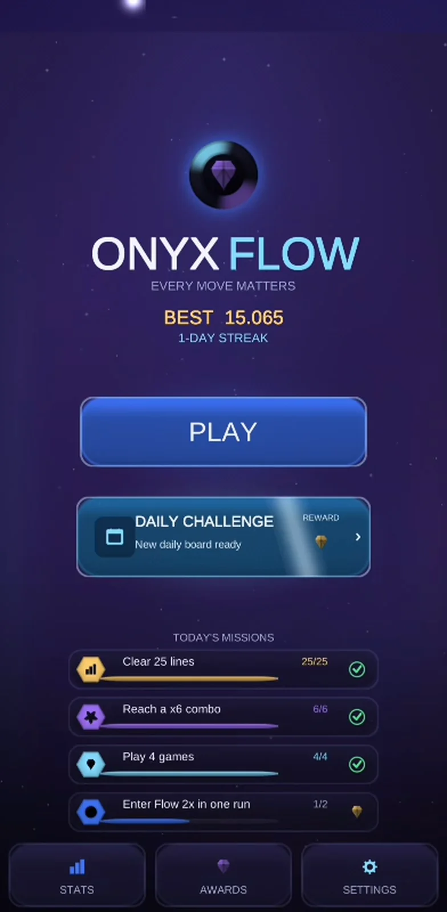
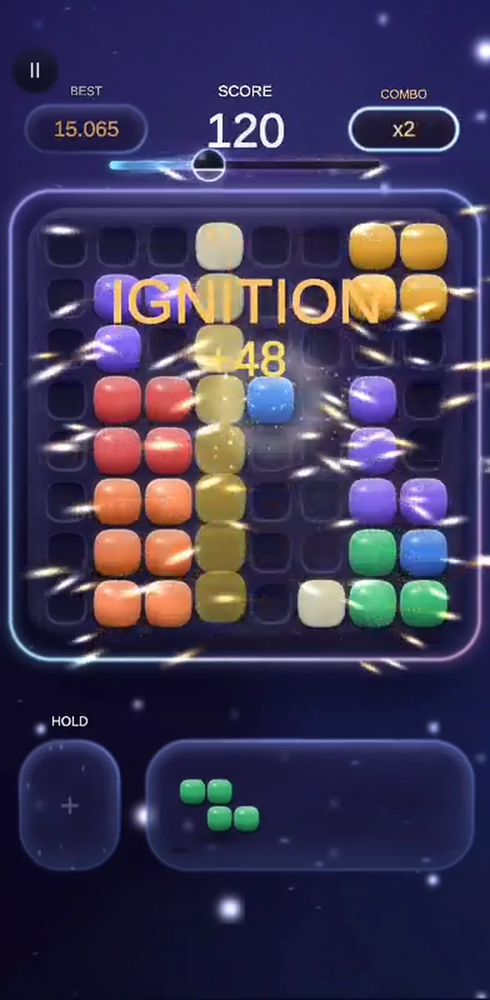
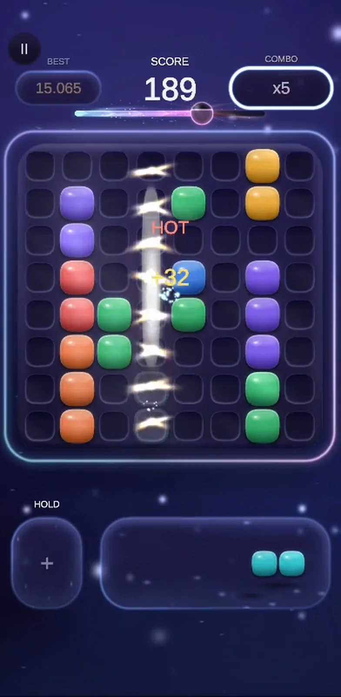
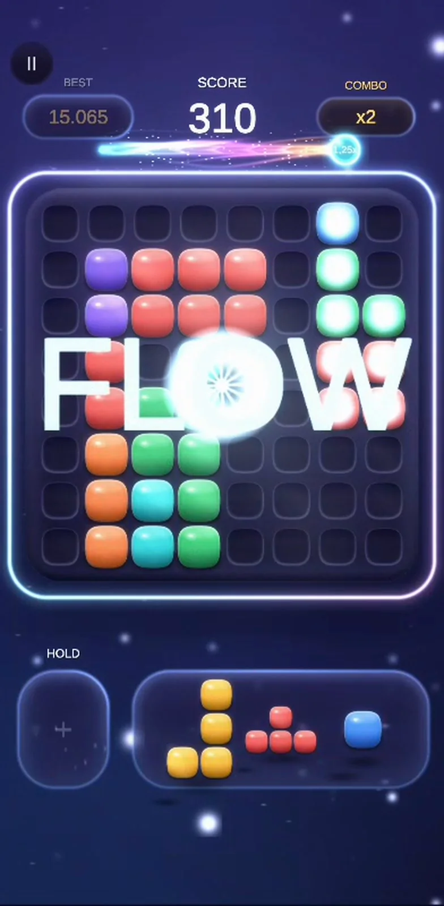
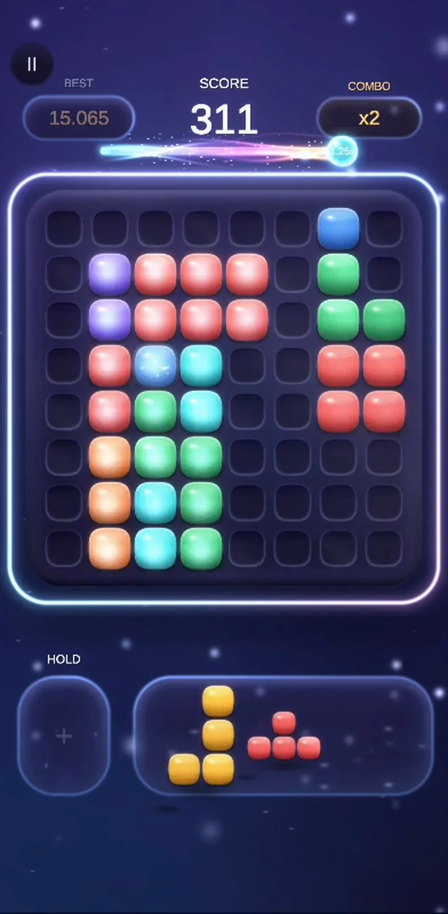
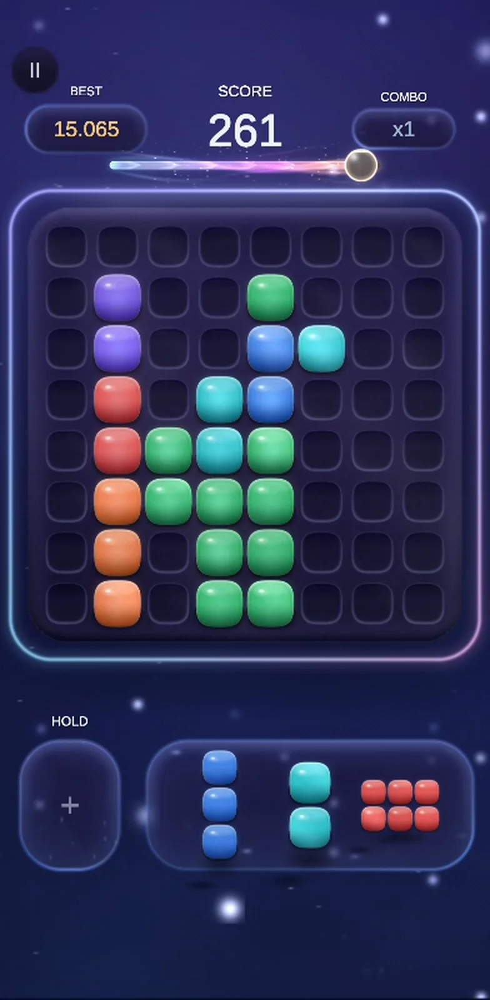
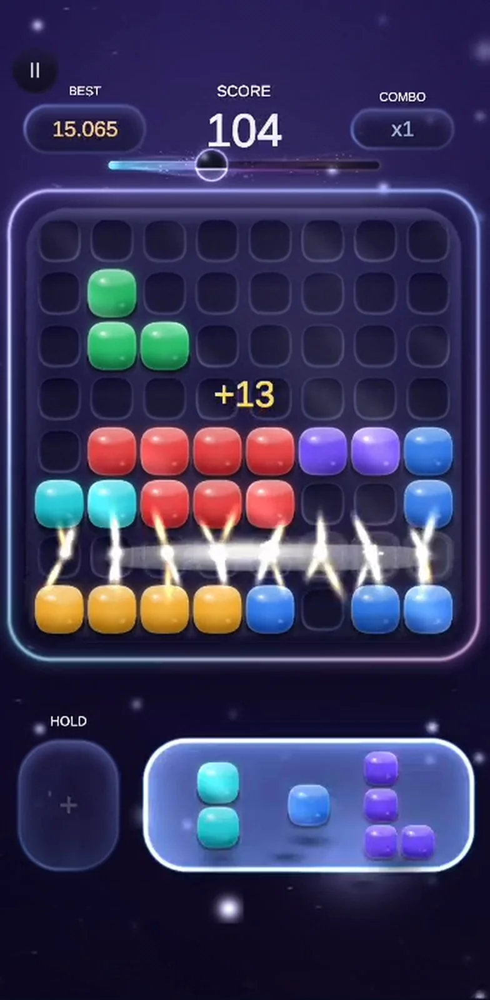
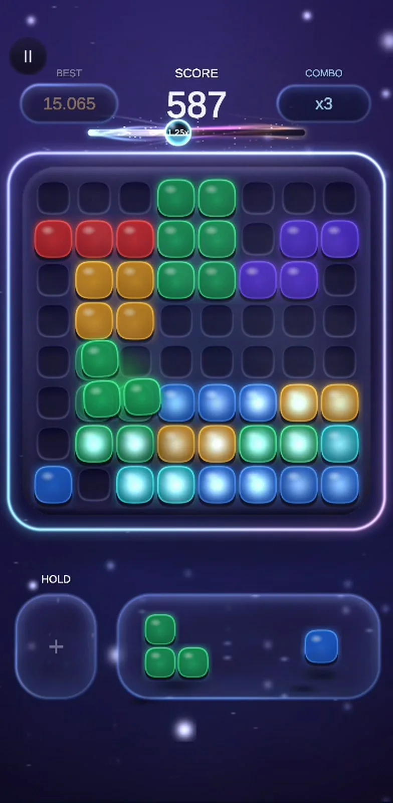
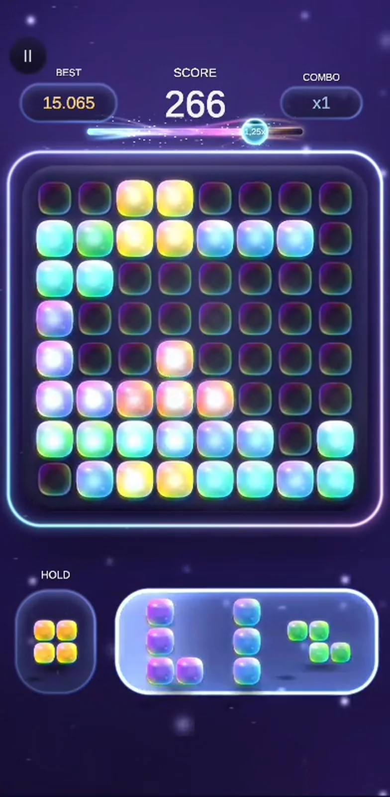
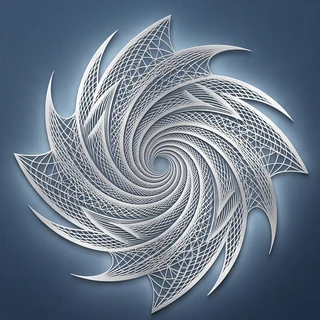

ONYX FLOW
Every Move Matters
A block puzzle with a state to chase. Clear lines and the Flow meter charges; keep the board open and each clear is worth more. Reach Flow and the board turns to crystal — a current running through everything you built, multiplying every point you score until you let it slip.
Free · Ad-supported · No lives · No timers · Plays offline
The signature mechanic
Flow is earned, never bought.
Most block puzzles end when the board fills. Onyx Flow adds one thing on top of the classic rules — a meter that only good play can charge, and that only good play can hold.
-
Clears charge it
Only line clears feed the meter, and bigger clears pay far more than single ones. A move that clears nothing gives you nothing.
-
Clean boards multiply it
How much open, connected space you leave behind decides how much each clear is worth. Elegance can't charge the meter on its own — but it makes every hit count.
-
Flow crystallizes the board
The board becomes one living crystal and a current runs through everything that's connected. Stranded islands stay dark — the mechanic teaches itself.
-
Holding it is the skill
Flow ebbs a little with every move. Keep the clears coming and it lasts; drift for a few moves and you watch it fade.
-
Each one is rarer — and richer
The next Flow in a run is always harder to reach than the last, and always pays more. That turns a run into a chase instead of a restart.
The onyx marker rides the track as the meter charges. Reach the fifth Flow of a run and every point you score is worth more than double.
What's in it
Classic rules. Everything around them, rebuilt.
Drag pieces onto an 8×8 board, fill a row or a column, watch it clear. Nothing about that changes — the depth is in what the game does with your decisions.
Hold, and use it live
Park an awkward piece for later — then drag it straight out of the hold slot onto the board when the gap finally appears. No duplication, no cooldown.
Combos with names
Chain clears and the run announces itself — IGNITION, HOT, OVERDRIVE, NOVA. Each tier is louder than the last, in sound, light and score.
One daily board for everyone
The daily challenge is generated from the date itself, so every player in the world gets exactly the same pieces in exactly the same order. Same board, same odds.
Missions and a forgiving streak
A fresh set of missions every day, and a streak that survives real life — miss a day and a banked grace token covers you instead of wiping weeks of play.
Awards, stats and skins
Seventeen achievements, a full statistics wall, and four hand-built piece finishes — one of which can show up unannounced the moment you clear the board.
Picks up where you left off
Close the app mid-run and the exact board comes back. Every game is stored as a seed plus your moves, so it can be replayed move for move.
The feel
Glass you want to touch.
Every block, every glow and every particle in the game is generated in code at startup — no stock art, no asset-store filler. The result is a 26 MB download that holds 60 frames a second on a mid-range phone, and a board that lights up like jewellery when a line goes.
Cathedral, not casino. The celebration never gets in the way of the next move.
Screens
Captured on a real device.
Samsung Galaxy A25, running the build as it stands today.





Four finishes
The same board, in four materials.
Every skin is generated in code, not painted — same silhouettes, same readable colours, a completely different surface. Switch whenever you like in Settings.




The design promise
Nothing in this game is designed to wear you down.
The game is free and ad-supported. Beyond that, every mechanic that pressures players into paying was considered and turned down on purpose — what's left has to earn its place by being good to play.
- No continues to buy. When the run ends, it ends.
- No energy, no lives. Play for a minute or an hour.
- No paid rerolls. The pieces you get are the pieces you play.
- No streak insurance for sale. Grace is earned by playing.
- No account, no sign-up. Open the app and play.
- Your progress stays on your phone. No profile, no cloud — see the privacy policy.
Fact sheet
For press and creators.
- Developer
- Portal Design Studio
- Platform
- Android (phone)
- Engine
- Unity 6
- Download size
- ≈ 26 MB
- Price
- Free, ad-supported
- Players
- Single player
- Connection
- Plays offline
- Release
- To be announced
Press kit, key art and capture footage on request — write to portaldesignstudios@gmail.com.

The studio
Portal Design Studio
Onyx Flow is built by Portal Design Studio — one developer, no publisher, every block and every sound generated in code.